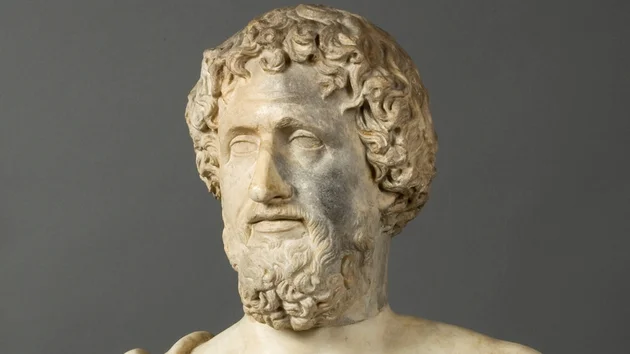

|  | Tales de Mileto foi um filósofo pré-socrático, astrônomo, matemático, |
| engenheiro e comerciante da Grécia Antiga, fundador da Escola Jônica | |
| Na cidade de Mileto, foi fundador da "Escola Jônica", considerada a | |
| mais antiga escola filosófica, onde seus pensadores buscavam explicações | |
| cosmológicas, ou seja, por meio da natureza através das observações. | |
| Diz-se que Tales foi convidado para descobrir a altura da pirâmide Quéops, | |
| no Egito. Diante disso,Diante disso, surgiu o Teorema de Tales, onde as | |
| retas paralelas e transversais formam segmentos proporcionais. | |
| Vídeo no Canal Original |